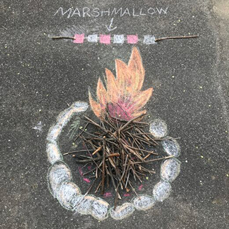
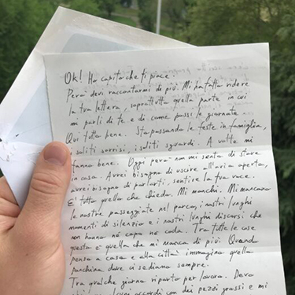
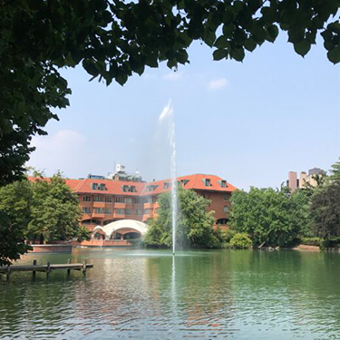

Il progetto
Sentieri Alternativi è una comunità digitale che raccoglie storie, le vostre, per metterle insieme all’interno di una mappa nella quale poter navigare, scrivere, condividere. La nostra idea è che ogni luogo ha la sua storia, o forse più di una. L’intento è quello di costruire un archivio che possa arricchire la nostra esperienza quotidiana della città e quella delle persone che ogni giorno arrivano a visitarla. Ognuno di noi contribuisce ogni giorno a raccontare la storia della città in modo unico e personale: attraverso parole, fotografie, disegni, verità o bugie.
Articoli

Incontri e scontri
Nel cortile di casa
Giovedì 2 Aprile 2020 In cortile ci sono tanti bambini. Sono stati accuratamente distanziati
per evitare inconvenienti, ma ci sono.
Alcuni giocano con i gessetti, colorano
l’asfalto
dando forma ai loro sogni.
20-07-2020
nome autore

False piste
Una lettera senza destinazione
Una giornata ventosa può regalarci di tutto. Anche quando il mondo torna a essere lo stesso immobile mondo di sempre, restano segni di quel passaggio. Un passaggio che ha portato con sé, mescolato, scompigliato carte e pensieri.
20-07-2020
nome autore

In movimento
Un luogo senza memoria
Segrate è un labirinto. Mi ci sono perduto più volte, a piedi o in bici, tra i suoi palazzoni color mattone, i ponti pedonali e le strade scavate tra le isole dei giardini.
20-07-2020
nome autore